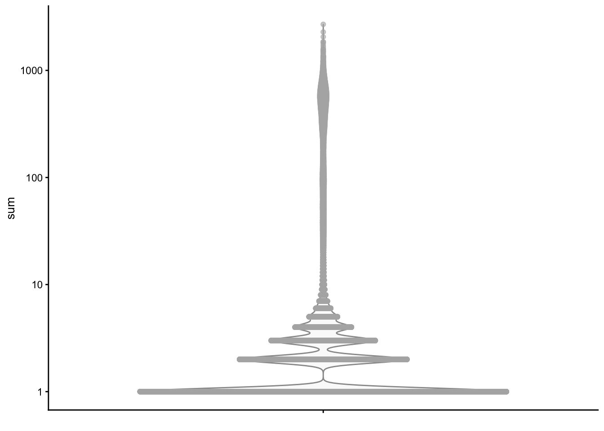
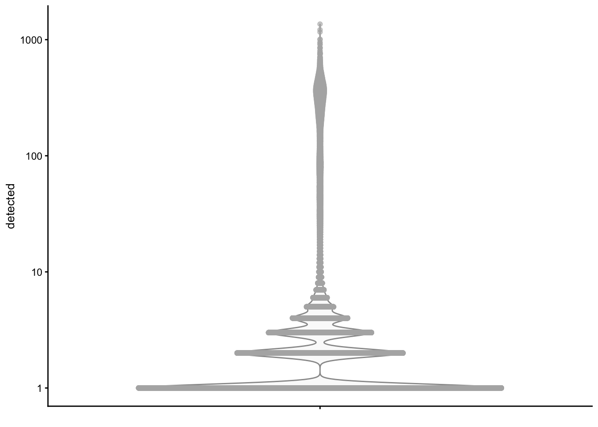
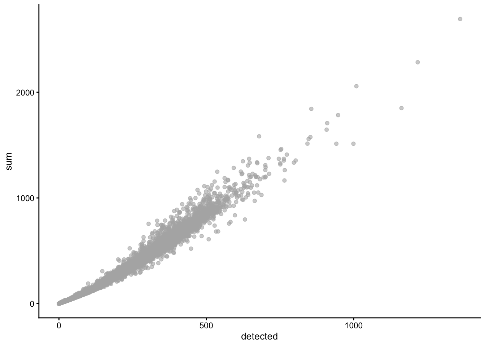
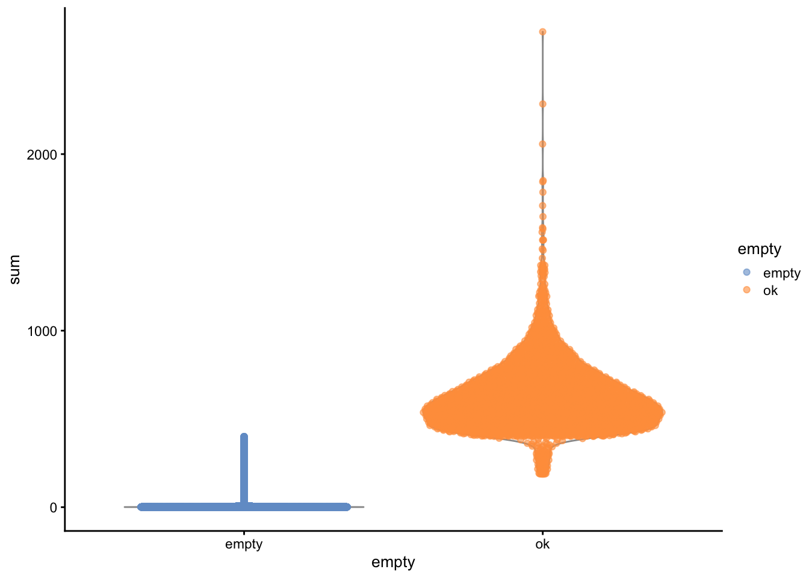
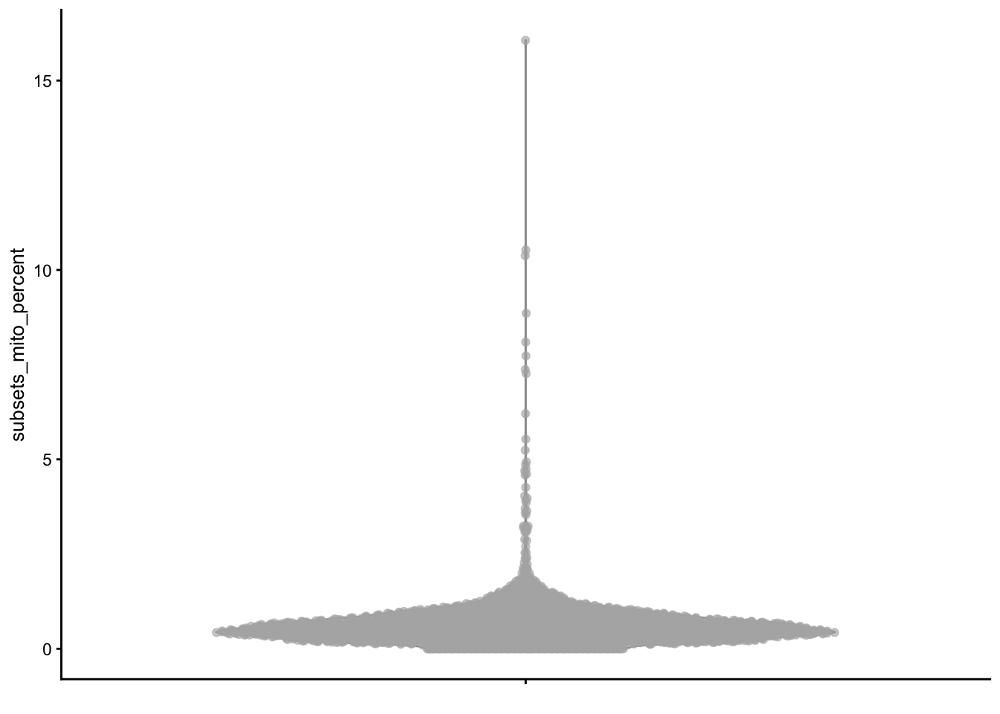
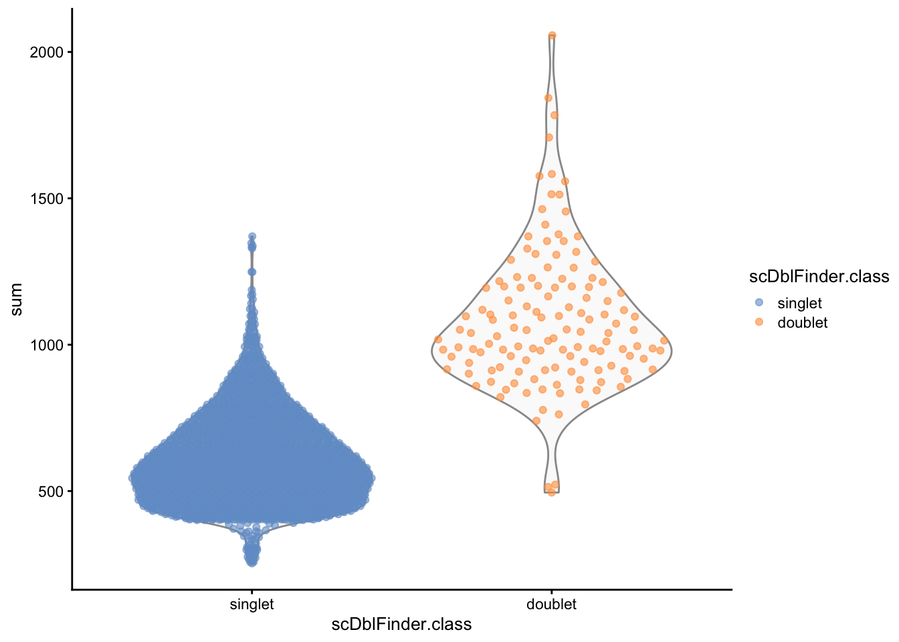
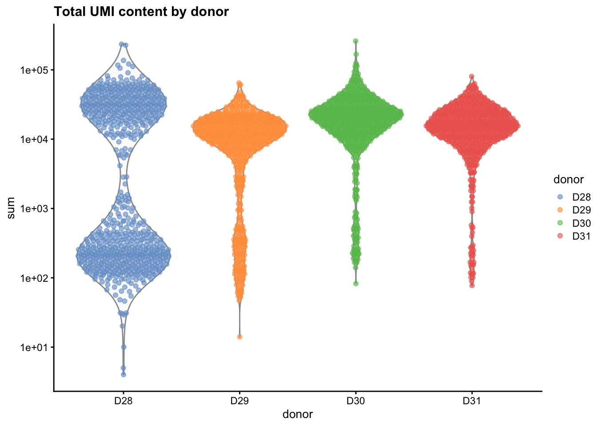
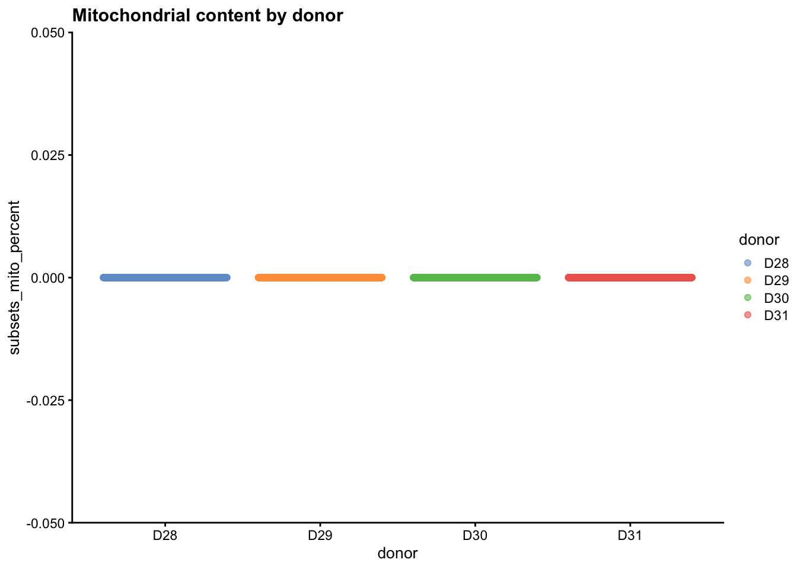
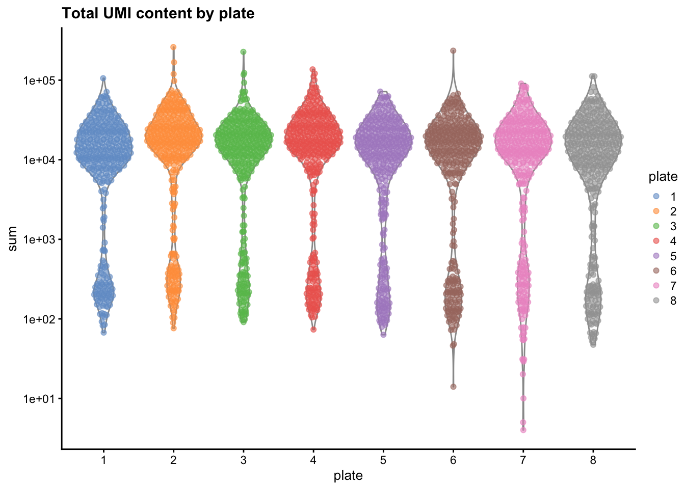
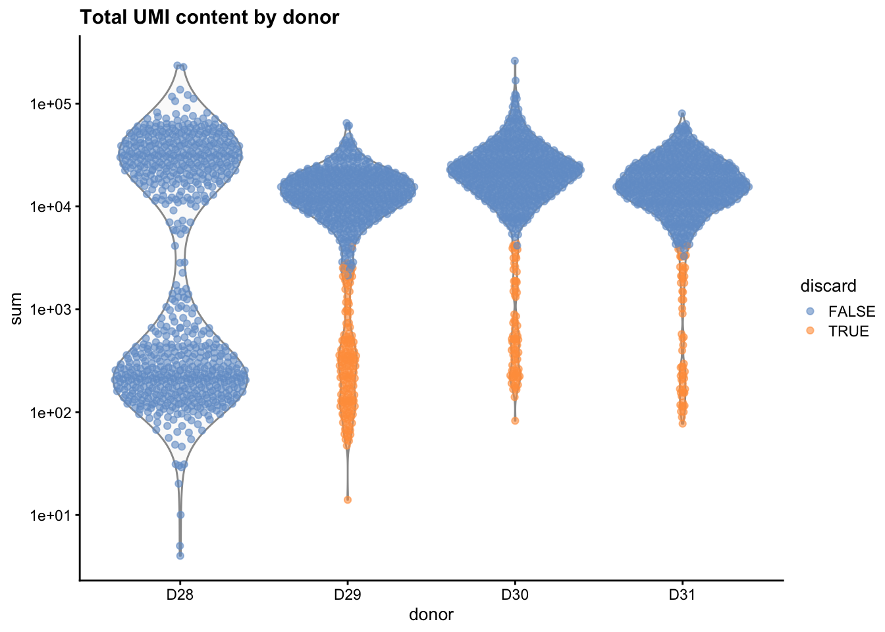

4 Quality Control
Once an object has been created in R, you have to make sure that you will be working with good data.
Most of these QC issues come from a sensible assessment of data, but in many cases whether a particular value represents a poor quality cell varies according to the source of data, the type of technology and platform, the intended application, etc. These should be considered as general guidelines and not strict rules to abide by.
4.1 Things to watch out for
In the previous chapter we saw that a lot of sequencing reads will be assigned to empty droplets. Removing those is just the beginning. Here is an incomplete list of things that you should assess critically:
- balanced experimental design
This is not something that you can fix post-sequencing, but you can help your collaborator with at the time of planning. Experiments should be well designed, meaning that the size, timing and grouping of experimental samples avoids the introduction of uninteresting variation. Controls should be processed along with cases, in the same round; they can be split in different rounds only if for every control there is a corresponding case. Processing of samples should not be so long that the time difference between the first and the last sample consists of several hours. Sex, age, strain/ethnicity/background, should all be balanced (unless they are the subject of the study). - ambient RNA contamination (aka “the soup”).
Cells may have been lysed in the culture medium/dissociation solution before they were captured in droplets/wells, releasing the content of their cytoplasms. This now cell-free RNA can still be included in droplets/wells, captured, amplified, and sequenced. Ambient RNA contamination can be a big issue for differential expression studies. - high relative mitochondrial gene expression
A cell that is expressing a high level of mitochondrial RNA is a cell that was already undergoing apoptosis or other forms of cell death, as the mitochondrial transcripts would have been released in the cytoplasm. It is a common conception in the field that, by discarding cells with a high % of mitochondrial transcripts, you are actually discarding suffering/dying cells that would confuse the analysis. However, some cell types (such as myocytes) can be rich in mitochondria owing to their big energy requirements. When - low/high detection of transcripts
Cells with too few reads or too many reads are usually discarded as damaged/ambient and doublets, respectively. Small cells, however, may have fewer RNA molecules. - effect of the cell cycle
Cell populations that are actively cycling may present different transcriptional profiles according to the phase of the cell cycle that they are in. If this effect is not accounted for, you could be mislead to think that there are 3 different cell populations (one for every detected phase); in reality the population is one, but it is cycling in an unsynchronized fashion. Moreover, when analyzing single nucleus RNA-seq, the presence of transcripts that are exclusively cytoplasmic or mitochondrial may point to poor library preparation, as the cytoplasm has not been stripped from the fixed tissues well enough, possibly creating confounding effects. - High MALAT1 expression
In humans MALAT1 is transcribed into a long non-coding RNA that is systematically and reliably quantified by most poly-A capture-based sequencing methods, effectively soaking up many sequencing reads. As a highly expressed gene, it may also appear as highly variable, thus creating the illusion that it is a biologically relevant marker. Evidence suggests that MALAT1 is another stress-associated marker rather than an actual biological one. However, there are some cases (e.g. some cancers and leukaemias) in which MALAT1 may play a more important function. - number of cells
Very trivially but importantly, the effective number of cells is important to be able infer properties from a biological system. Samples which have too few cells will fail to recapitulate the cell type composition of a tissue, and will most likely be over-clustered or overfitted by most algorithms. Collections of samples with highly unequal numbers of cells require additional steps to be included to account for these differences. - low/absent gene quantification
Chances are most of the genes will not be detected at all in your dataset. This does not mean that they were not expressed, but only that they were not measured due to low input and competition for sequencing reagent from more abundant transcripts. The absence of evidence is not the evidence of absence, and I will discuss a little more the problem of dropouts later on. Additionally, datasets in which only few genes are quantified and with a lot of noise may not be reliable. - doublets
Any single cell isolation technique will present the risk of incorporating more than one single cell per library preparation, meaning the same barcode will be shared by two different cells. These are called doublets and, if not accounted for, may look like intermediate cell states or entirely new cell populations. - batch effects
Datasets coming from different individuals, different captures and/or different technologies will inevitably present batch effects. These are systematic biases in gene expression that we are not interested in, but nevertheless affect the analysis and interpretation. I will discuss batch effects later on, but they should already be tackled at the QC stage, since they can skew the distribution of metrics and the decision over which cells to keep and which to discard.
There are other issues that can be more specific to certain technologies or tissues. For instance, the dissociation protocol may deplete a cell type, or it may activate an expression signature in a cell type (e.g. immune responses) that may look like a phenotype, etc.
4.2 Basic initial QC plots
Let’s use our sce object created through the kallisto|bustools pipeline in Section 3 (data input).
As you will remember, it is an unfiltered dataset coming from a single mouse sample.
4.2.1 Total counts and detected genes
We start by applying per-cell quality control using the scuttle package:
library(scuttle)
library(scater)
sce = addPerCellQC(sce)We can then visualize the metrics using violin plots:
plotColData(object = sce, y = "sum") + scale_y_log10()Warning: Transformation introduced infinite values in continuous y-axis
Transformation introduced infinite values in continuous y-axisWarning: Removed 7908 rows containing non-finite values (stat_ydensity).Warning: Removed 7908 rows containing missing values (geom_point).
plotColData(object = sce, y = "detected") + scale_y_log10()Warning: Transformation introduced infinite values in continuous y-axisWarning: Transformation introduced infinite values in continuous y-axisWarning: Removed 7908 rows containing non-finite values (stat_ydensity).Warning: Removed 7908 rows containing missing values (geom_point).
As you can see both the sum (total UMI per barcode) and the detected (number of transcripts with at least one UMI count) columns that were calculated by addPerCellQC() show that a very large portion of barcodes has only one read, then two, then three, etc. Due to the log-transformation in the plot scale, cells with sum = 0 were not plotted. We can still have an idea of their distribution:
head(table(sce$sum))
0 1 2 3 4 5
7908 38805 17737 11049 5937 2856 We also want to check that the two variables follow the expected relationship:
plotColData(object = sce, y = "sum", x = "detected")
Expectedly, as total counts increase more genes are detected.
4.2.2 Barcode ranks - knee plots
It is difficult to establish what constitutes an empty droplet vs a “full” one just based on those plots. Ideally we would know where to establish a cutoff below which we consider each droplet to be empty.
To understand better where this cutoff may lie, we can plot the total UMI for each barcode (y axis) vs their rank (x axis), both log-transformed. This will give us a “knee plot” which should allow us to understand whether there are two more or less discrete populations (empty and full) and where the threshold may lie.
We take the code from the DropletUtils vignette.
br.out <- barcodeRanks(sce)
# Making a plot.
plot(br.out$rank, br.out$total, log="xy", xlab="Rank", ylab="Total")Warning in xy.coords(x, y, xlabel, ylabel, log): 7908 y values <= 0 omitted from
logarithmic ploto <- order(br.out$rank)
lines(br.out$rank[o], br.out$fitted[o], col="red")
abline(h=metadata(br.out)$knee, col="dodgerblue", lty=2)
abline(h=metadata(br.out)$inflection, col="forestgreen", lty=2)
legend("bottomleft", lty=2, col=c("dodgerblue", "forestgreen"),
legend=c("knee", "inflection"))
metadata(br.out)$inflection[1] 186We see that a good threshold may lie at about 186 total UMIs for this dataset.
4.3 Removing empty droplets and ambient RNA
Having established a threshold, we can use it to call the emptyDrops() function from DropletUtils.
By specifying the threshold we are instructing the algorithm that whatever lies below 186 UMIs can be considered “ambient RNA”. Then, the algorithm compares the distribution of counts in each cell to the ambient distribution, and tests how significantly different it is by permutation testing. More details on the algorithm and testing regime can be found by typing ?emptyDrops.
empty_droplets <- emptyDrops(sce, lower = 186)
keep_droplets <- empty_droplets$FDR <= 0.01
ncol(sce)[1] 92846sum(keep_droplets, na.rm=TRUE)[1] 2802We end up with 2801 “good quality” cells according to the content alone. This is a huge reduction considering we started with 92846 barcodes, and it means a lot of sequencing was inevitably wasted.
We can add this information to the colData of our object and plot the sum of UMI counts divided by ambient and non-ambient:
sce$empty <- factor(ifelse(empty_droplets$FDR <= 0.01, "ok", "empty"))
sce$empty[is.na(sce$empty)] = "empty"
plotColData(object = sce, y = "sum", x = "empty", colour_by = "empty")
We also want to check that the number of permutations does not limit the ability of the algorithm to identify empty droplets:
table(Sig = keep_droplets, Limited = empty_droplets$Limited) Limited
Sig FALSE TRUE
FALSE 969 0
TRUE 2693 109Since there are no barcodes that have Limited == TRUE and Sig == FALSE we can safely assume the iterations were sufficient, and the result is reliable.
We can remove all the empty barcodes:
sce = sce[, which(sce$empty == "ok"), drop = FALSE]4.4 Mitochondrial content
To calculate mitochondrial content we isolate mitochondrial genes - conveniently labelled in their gene symbol by starting with “mt-” - and calculate the relative expression resulting in the percentage of mitochondrial content.
mito_genes = grep("^mt-", rowData(sce)$Symbol)
sce = addPerCellQCMetrics(sce, subsets = list("mito" = mito_genes))
plotColData(object = sce, y = "subsets_mito_percent")
4.5 Distribution-based thresholding
We can apply arbitrary thresholds, e.g. only retain cells with at least 400 total UMI counts, or below 5% mitochondrial content, but a more sophisticated approach consists in determining thresholds from the distributions themselves.
We use the isOutlier() function from scuttle to determine which barcodes are at least 3 MADs (Median Absolute Deviations) away from the median:
low_lib <- isOutlier(log10(sce$sum), type = "lower", nmad=3)
low_genes <- isOutlier(log10(sce$detected), type = "lower", nmad=3)
high_mt <- isOutlier(sce$subsets_mito_percent, type = "higher", nmad = 4)
data.frame(LowLib=sum(low_lib),
LowNgenes=sum(low_genes),
HighMT = sum(high_mt)) LowLib LowNgenes HighMT
1 25 16 53sce$discard <- low_lib | low_genes | high_mt
table(sce$discard)
FALSE TRUE
2738 64 We don’t need to remove many cells at this stage. We highlight cells marked for elimination:
plotColData(object = sce, y = "sum", colour_by = "discard")
We discard the marked barcodes:
sce <- sce[, !sce$discard]4.6 Doublet identification
We use the scDblFinder package to identify doublets in the data.
This package simulates artificial doublets by over-clustering cells, then mixing them together across clusters by summing the reads, and using these artificial doublets to create a classifier (based on the XGBoost libraries) that is able to assign a doublet probability to every cell, and their most likely origin.
One of the parameters of scDblFinder is the expected number of doublets, which depends on the technology and the initial amount of cells profiled. You can refer to this link for 10X Genomics Chromium platforms and library preparation protocols.
scDblFinder and other doublet finding methods work well to identify heterotypic doublets, i.e. doublets in which cells come from different populations/types. If two cells of the same or similar type are included in a doublet - termed homotypic - they will not be called. However, homotypic doublets are accounted for since even though they cannot be distinguished they will still be generated.
library(scDblFinder)
sce <- scDblFinder(sce, clusters = TRUE)Clustering cells...8 clustersCreating ~5000 artificial doublets...Dimensional reductionEvaluating kNN...Training model...iter=0, 158 cells excluded from training.iter=1, 129 cells excluded from training.iter=2, 119 cells excluded from training.Threshold found:0.528133 (4.9%) doublets calledPlotting the results:
plotColData(object = sce, y = "sum", x = "scDblFinder.class", colour_by = "scDblFinder.class")
As expected, doublets tend to have a higher total UMI content.
Unlike empty droplets, we do not remove doublets at this stage. We flag them and see where they end up in downstream applications such as dimensional reduction and clustering.
4.7 Batch-aware QC
All the operations outlined above work well for a dataset derived from a single “batch”, i.e. a single patient, or capture, animal, etc. However, when dealing with multiple samples, it is important to take systematic biases into account.
What is a batch effect?
“Whatever difference you do not care for but shows up nevertheless” would be a curt but still relevant answer.
To be more precise while still being brief, whenever we sequence samples coming from different sources - patients, animals, labs, platforms, days of the week, machines - we introduce a systematic bias, i.e. a “batch effect”, that needs to be corrected and/or accounted for. If we don’t, we will find differences that are due to unintersting variability (e.g. between patients, or between days of the week) which has no biological interpretation.
To illustrate these differences, let’s download a small multi-sample single-cell RNA-seq dataset from Muraro et al. 2016, using the scRNAseq package. This dataset contains pancreas cells from 4 donors, sorted in 8 plates each, and sequenced using the CEL-Seq2 technology, a full-length lower throughput platform.
library(scRNAseq)
muraro <- MuraroPancreasData()snapshotDate(): 2022-04-26see ?scRNAseq and browseVignettes('scRNAseq') for documentationloading from cachesee ?scRNAseq and browseVignettes('scRNAseq') for documentationloading from cacheWe can see how cells from each donor have been sequenced in 8 plates:
table(muraro$donor, muraro$plate)
1 2 3 4 5 6 7 8
D28 96 96 96 96 96 96 96 96
D29 96 96 96 96 96 96 96 96
D30 96 96 96 96 96 96 96 96
D31 96 96 96 96 96 96 96 96Is there any systematic bias between plates and/or donors in the distribution of counts?
mito_genes = grep("^MT-", rowData(muraro)$symbol)
muraro = addPerCellQCMetrics(muraro, subsets = list("mito" = mito_genes))
plotColData(object = muraro, x = "donor", y = "sum", colour_by = "donor") +
scale_y_log10() +
ggtitle("Total UMI content by donor")
plotColData(object = muraro, x = "donor", y = "subsets_mito_percent", colour_by = "donor") +
ggtitle("Mitochondrial content by donor")
plotColData(object = muraro, x = "plate", y = "sum", colour_by = "plate") +
scale_y_log10() +
ggtitle("Total UMI content by plate")
plotColData(object = muraro, x = "plate", y = "subsets_mito_percent", colour_by = "plate") +
ggtitle("Mitochondrial content by plate")
First things first: this dataset has no mitochondrial transcript quantification, nor does it require removal of empty droplets. Moreover, CEL-seq2 has an extremely low expected doublet rate (< 1%, see Ding et al. Nature Biotechnology 2020).
You can see that, while plates are mostly similar, donors have different distributions of total read count. This means that applying a cutoff on the whole dataset without dividing it by donor will both include and remove several cells that, in a single datasets, would have been excluded/included.
The batch argument in isOutlier() allows to take this effect into account by applying the distribution-based cut-offs separately in each batch. In this case the batch argument is a vector containing the donor information, i.e. muraro$donor. In other cases it may just be sufficient to specify the name (character) of the column in colData for the function to know where to retrieve the batch labels.
low_lib <- isOutlier(log10(muraro$sum), type = "lower", nmad=3, batch = muraro$donor)
low_genes <- isOutlier(log10(muraro$detected), type = "lower", nmad=3, batch = muraro$donor)
data.frame(LowLib=sum(low_lib),
LowNgenes=sum(low_genes)) LowLib LowNgenes
1 250 285muraro$discard <- low_lib | low_genes
table(muraro$discard)
FALSE TRUE
2787 285 plotColData(object = muraro, x = "donor", y = "sum", colour_by = "discard") +
scale_y_log10() +
ggtitle("Total UMI content by donor")
Similarly, other functions (such as scDblFinder) require you to specify the batch to make correct inferences about doublets.